A quiet Tyrolean lake in the high country — alpine water, close to Innsbruck, far from everything.
Tyrol keeps its lakes tucked into the folds of the mountains, minutes from the valley yet a world away. This one gave the couple cold clear water, a rim of peaks, and the particular hush that settles over the Alps out of season.
With Innsbruck airport so near, Tyrol is the easy door into the high Alps — big scenery without a long journey to find it.
Planning Dolomites Wedding Planner · Photo Blitzkneisser
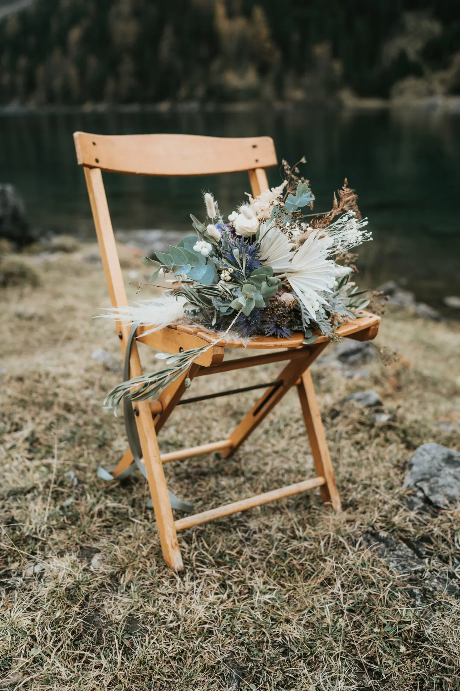
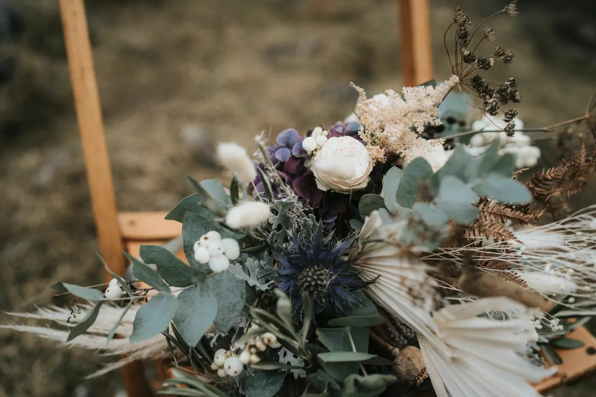
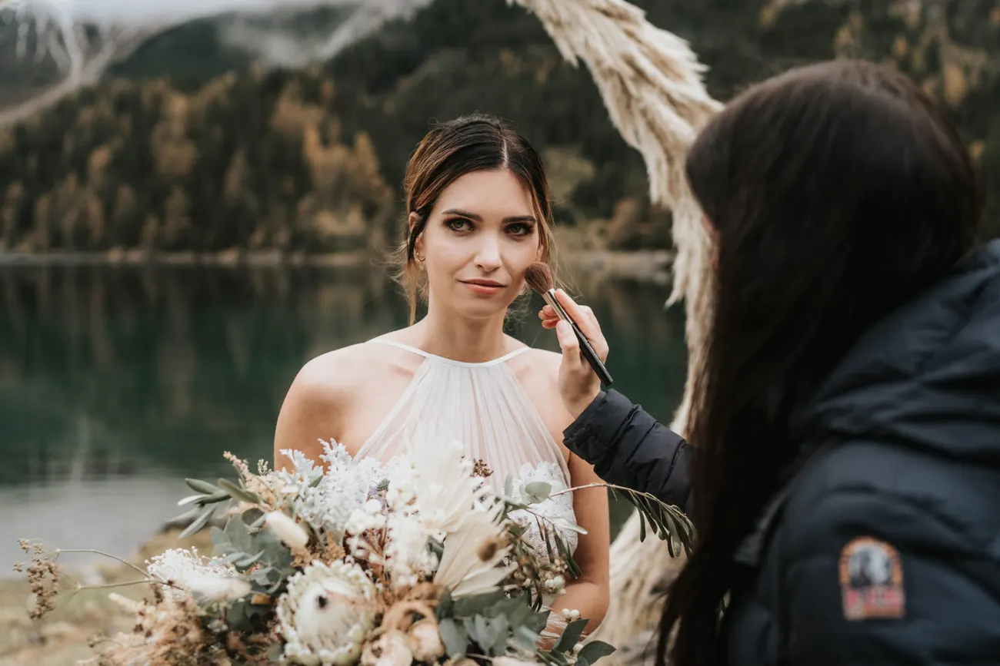
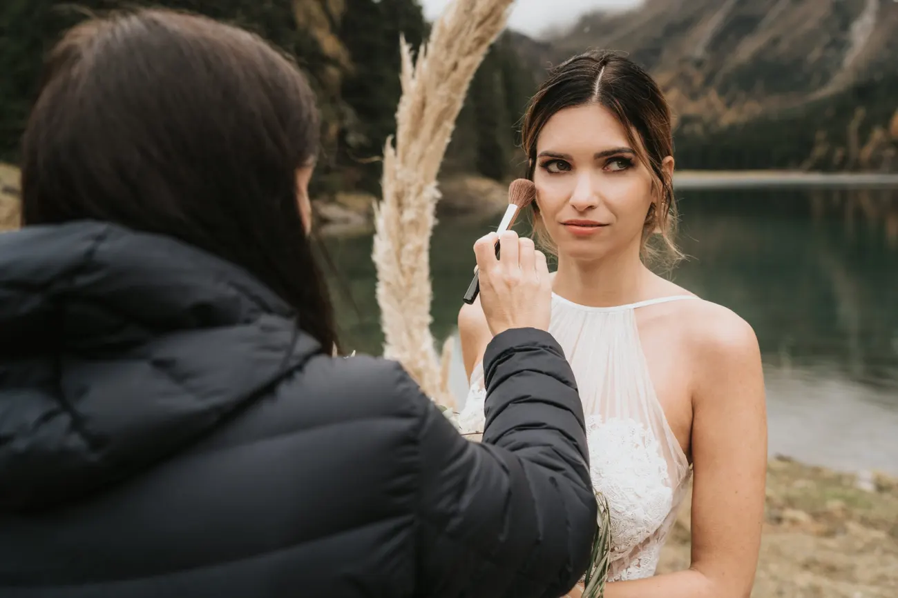
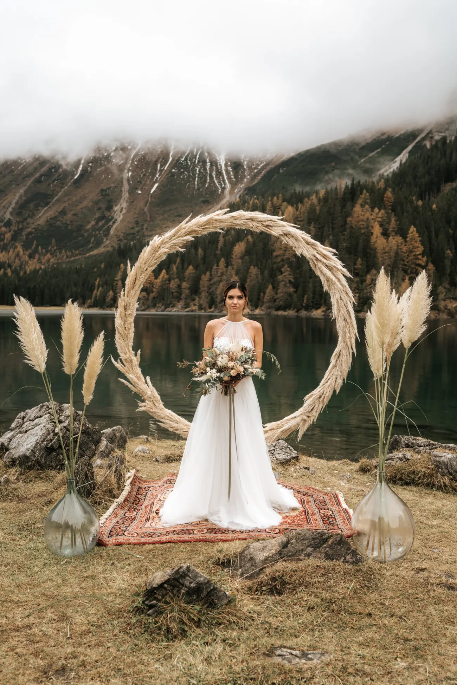
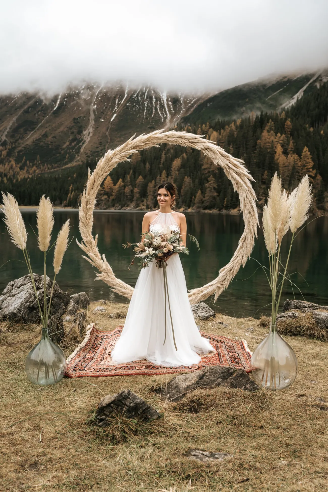
High water, thin air, and no one else for miles.

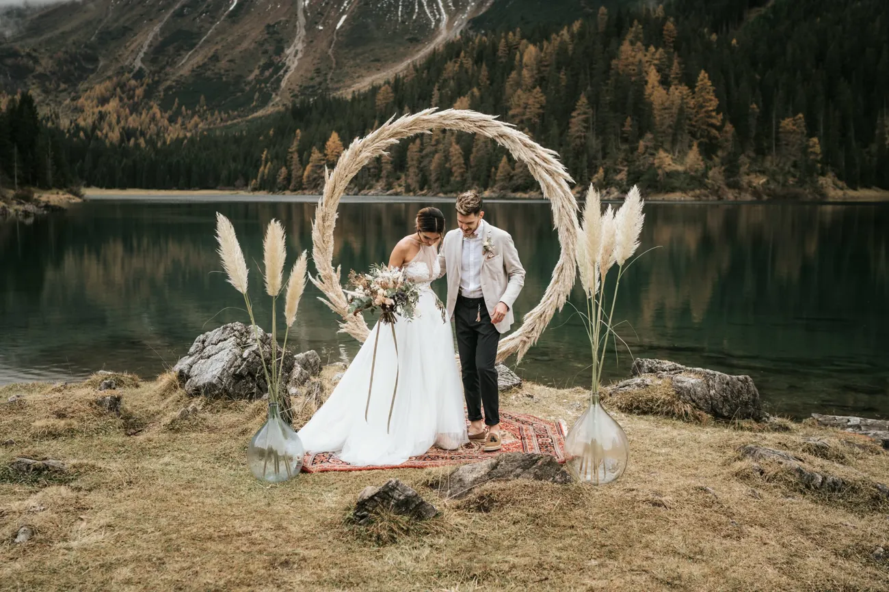
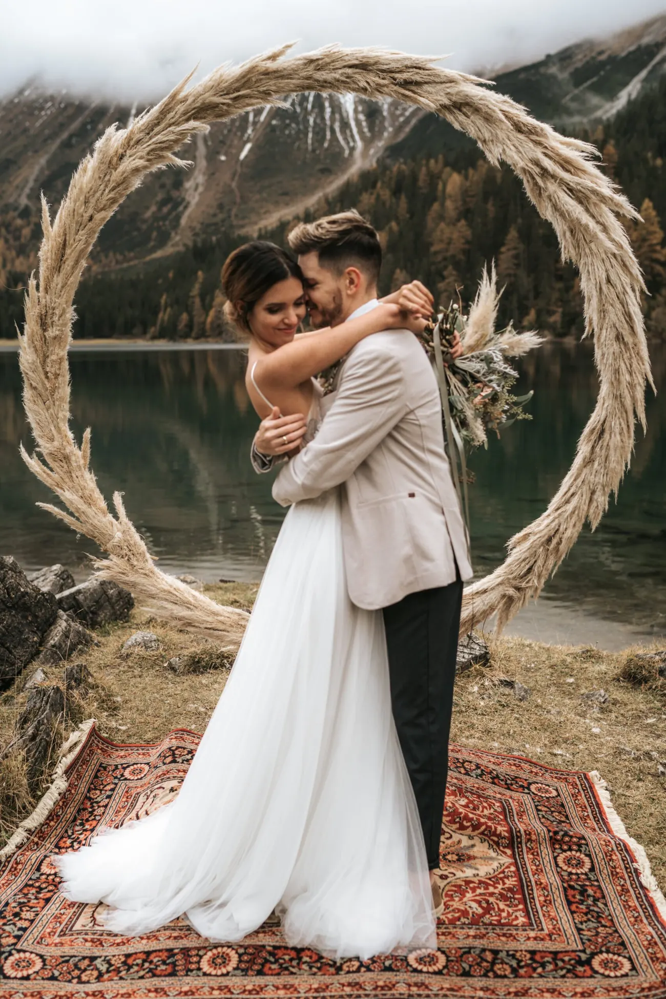
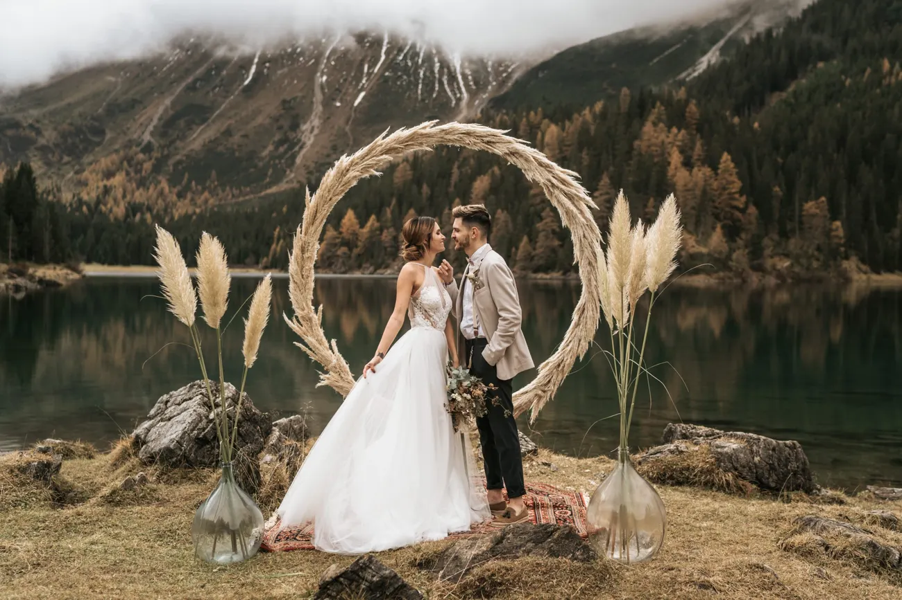
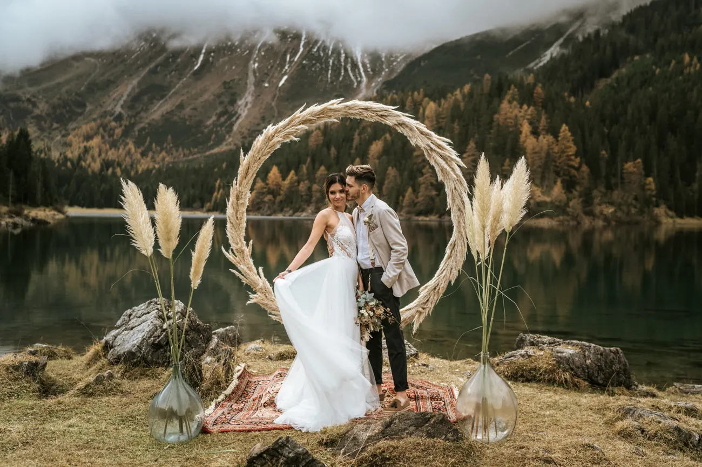
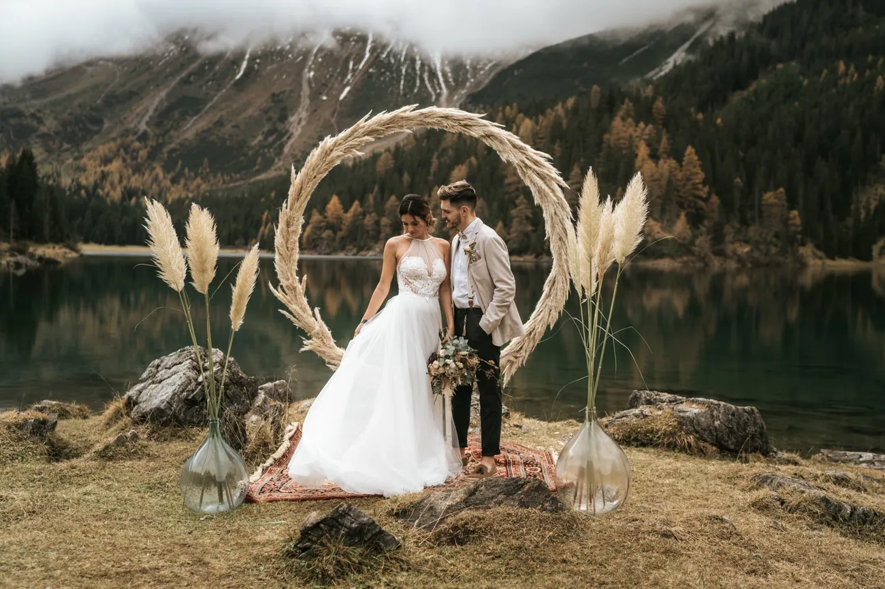
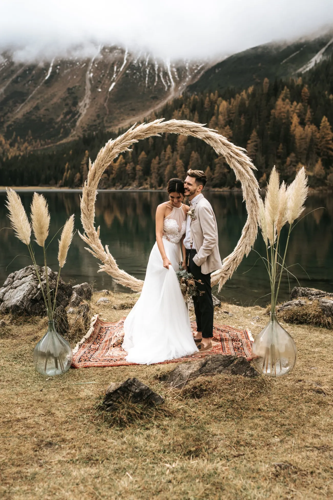
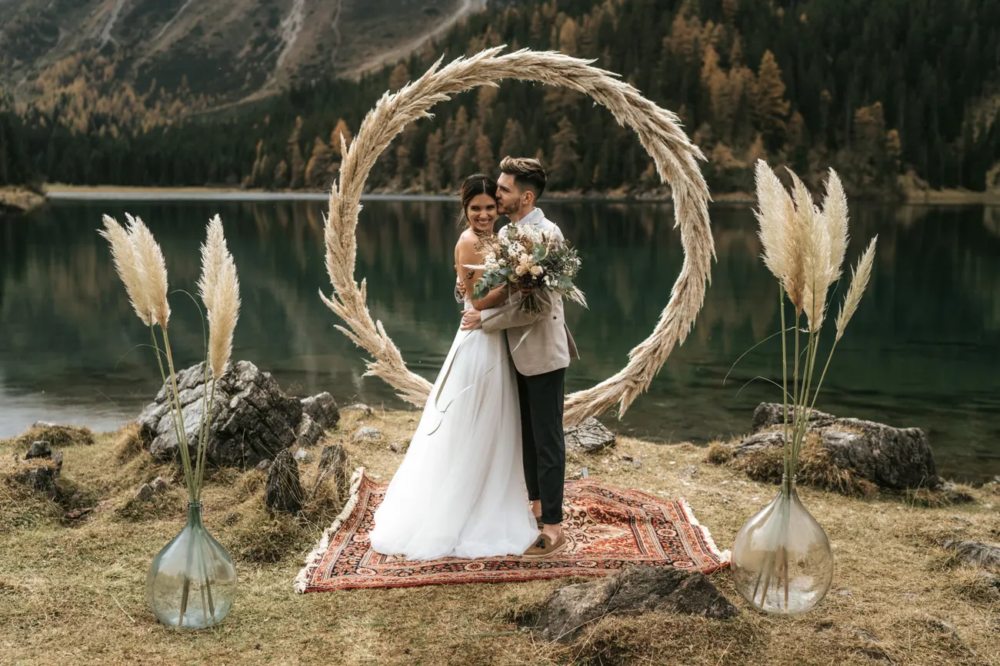
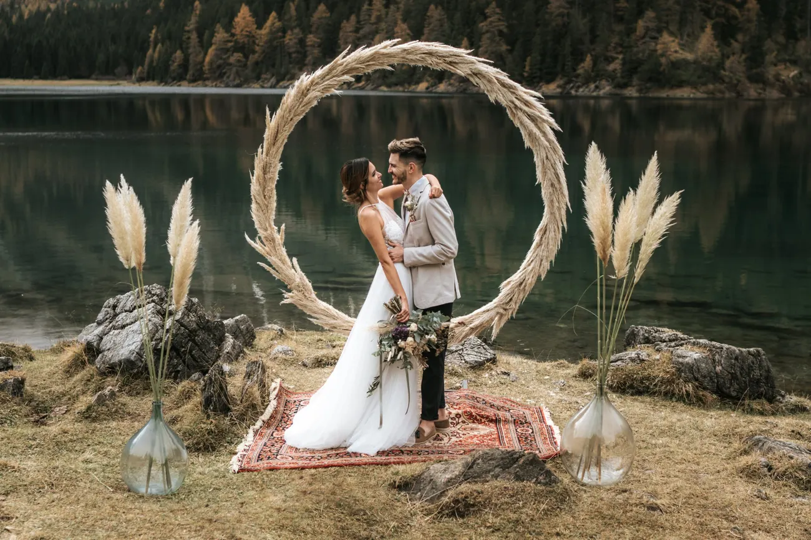
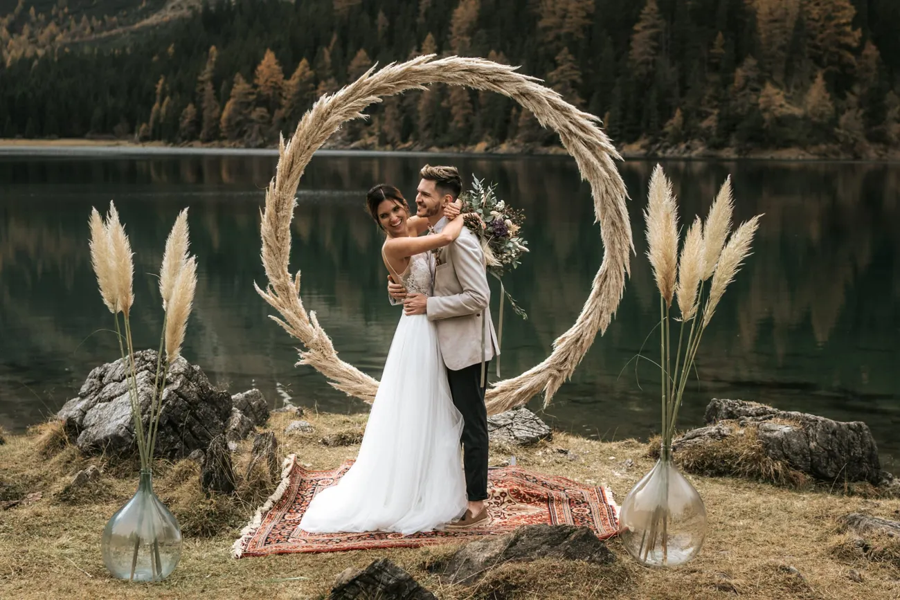
However you picture your day — a quiet sunrise, a summit, a lake to yourselves — we plan it around the two of you and photograph it the way it truly felt.
We use cookies for anonymous statistics (Google Analytics via Google Tag Manager) to improve this site. Analytics runs only with your consent. Privacy Policy